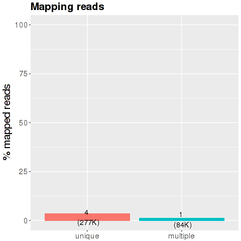

Basic Statistics: Overview
Basic Statistics: Main plots
This plot shows the initial number of reads that remain after the main processing steps of the analysis workflow. The first bar 'Initial number of reads' shows the total amount of reads produced by the sequencer for this sample (100%). The second bar 'Length filtering' depicts the number of reads left after filtering for reads that are too short or too long (default thresholds for removal are <32 nt and >15 nt). The third bar 'Unique mapping' shows the number of reads that are uniquely mapped to one of the five small RNA databases or the respective genome (reads shorter than 20 nt with 0 mismatches, longer than 20 nt with 1 mismatch).
This plot shows the percentage of uniquely aligned reads per small RNA species. RNA species considered are miRNAs, piRNAs, snoRNAs, snRNAs, and rRNAs. Additionally, RNAs that could not be aligned to known small RNA species but that map uniquely to the genome are shown in the 'miscRNA' bar. These RNAs are either fragmented long or short RNA species, editing variants of small RNAs (isoMIRs), or might represent as yet unknown small RNA species. An analysis routine for the classification of 'miscRNAs' will be included in the second version of the software.
This plot shows the distribution of sequence length after adapter removal (trimming) and before length filtering. This plot allows you to draw general conclusions about the success of your sequencing experiment. Peaks that you should be seeing, depending on the sample source, might be a prominent peak around 20-23 bases, which is the general size distribution of miRNAs. Other small RNA species show peaks around 31-32 bases for snoRNAs and piRNA. A prominent peak at 0-1 bases would indicate adapter ligations without insert, this would mean that your DNA input into the ligation reaction was too low or the amount of adapters was too high, parameters that should be adjusted in the next library preparation. A prominent peak around 14-15 bases might indicate degradation products, either real degradation products in the cell or fragments of RNA due to the sample preparation. Peaks that appear around 50 bases indicate that the size selection reaction was bad or did not take place and in general represent regular, larger RNA species.
Percentage of reads too short/long
After the trimming of the adaptor the pipeline discards the reads with length smaller than 15 and greater than 32 nucleotides. The y-axis show the percentage of the total reads, the number of reads in millions are shown in bracket
Sequence length distribution before and after filter
This plot shows the distribution of sequence length after adapter removal (trimming) and before length filtering. This plot allows you to draw general conclusions about the success of your sequencing experiment. Peaks that you should be seeing, depending on the sample source, might be a prominent peak around 20-23 bases, which is the general size distribution of miRNAs. Other small RNA species show peaks around 31-32 bases for snoRNAs and piRNA. A prominent peak at 0-1 bases would indicate adapter ligations without insert, this would mean that your DNA input into the ligation reaction was too low or the amount of adapters was too high, parameters that should be adjusted in the next library preparation. A prominent peak around 14-15 bases might indicate degradation products, either real degradation products in the cell or fragments of RNA due to the sample preparation. Peaks that appear around 50 bases indicate that the size selection reaction was bad or did not take place and in general represent regular, larger RNA species
Mapped reads
 The x-axis is the division of the reads according with their characteristics during the mapping phase: the blue bar is percentage of reads mapped in just one region of the genome. The middle bar represents the percentage of reads mapped on multiple loci of the genome and the light blue bar is the percentage of the reads too short and discarded from the analysis.
Number of reads
This plot shows the initial number of reads that remain after the main processing steps of the analysis workflow. The first bar 'Initial number of reads' shows the total amount of reads produced by the sequencer for this sample (100%). The second bar 'Length filtering' depicts the number of reads left after filtering for reads that are too short or too long (default thresholds for removal are <32 nt and >15 nt). The third bar 'Unique mapping' shows the number of reads that are uniquely mapped to one of the five small RNA databases or the respective genome (reads shorter than 20 nt with 0 mismatches, longer than 20 nt with 1 mismatch).
Density of small RNA species
This plot shows the percentage of uniquely aligned reads per small RNA species. RNA species considered are miRNAs, piRNAs, snoRNAs, snRNAs, and rRNAs. Additionally, RNAs that could not be aligned to known small RNA species but that map uniquely to the genome are shown in the 'miscRNA' bar. These RNAs are either fragmented long or short RNA species, editing variants of small RNAs (isoMIRs), or might represent as yet unknown small RNA species. An analysis routine for the classification of 'miscRNAs' will be included in the second version of the software.
Please click to hide the graphic.
Pathogen (Contaminant) Kingdom
 This plot shows total reads (the number of reads that did not align to
the target organism (TO) transcript and target organism genome) and
the number of reads aligned to different pathogen genomes such as
viral,bacterial and archaeal genomes. The first bar 'initial reads' shows
the number of reads not aligned to the TO transcript and TO genome. The
following bars show number of reads mapping to particular 'pathogen
genome' such Bacteria,Viruses and Archaea.
This plot shows total reads (the number of reads that did not align to
the target organism (TO) transcript and target organism genome) and
the number of reads aligned to different pathogen genomes such as
viral,bacterial and archaeal genomes. The first bar 'initial reads' shows
the number of reads not aligned to the TO transcript and TO genome. The
following bars show number of reads mapping to particular 'pathogen
genome' such Bacteria,Viruses and Archaea.
Pathogen (Contaminant) Species
 This plot shows the number of reads that did not align to the target
organism (TO) transcript and target organism genome but aligned to
pathogen genomes.Only top five contaminants based on the read counts are
shown.
This plot shows the number of reads that did not align to the target
organism (TO) transcript and target organism genome but aligned to
pathogen genomes.Only top five contaminants based on the read counts are
shown.
QC of raw data
To see the QC Raw Report, click over the image or in this link.
Tools and Databases version
Citations
Oasis: online analysis of small RNA deep sequencing data.
Capece V, Garcia Vizcaino JC, Vidal R, Rahman RU, Pena Centeno T, Shomroni O, Suberviola I, Fischer A, Bonn S.
Bioinformatics. 2015
See online
Cutadapt removes adapter sequences from high-throughput sequencing reads.
Marcel Martin
EMBnet.journal. 2011
See online
STAR: ultrafast universal RNA-seq aligner
Alexander Dobin1,Carrie A. Davis1,Felix Schlesinger1,Jorg Drenkow1,Chris Zaleski1,Sonali Jha1,Philippe Batut1,Mark Chaisson2 and Thomas R. Gingeras1
Bioinformatics first published online October 25, 2012 doi:10.1093/bioinformatics/bts635
See online
featureCounts: an efficient general-purpose program for assigning sequence reads to genomic features
Liao Y, Smyth GK and Shi W (2013)
Bioinformatics, 30(7):923-30, 2014
See online
fastQC: a quality control tool for high throughput sequence data.
Simon Andrews
See online
Discovering microRNAs from deep sequencing data using miRDeep
Friedländer, M.R., Chen, W., Adamidi, C., Maaskola, J., Einspanier, R., Knespel, S., Rajewsky, N.
See online
miRbase
NetWatch - Science 303:1741 (2004)
See online
piRNAbank
Sai Lakshmi S, Shipra Agrawal
Nucleic Acids Research 2008 January; 36 (Database issue): D173–D177. [PMCID: PMC2238943]
See online
Kraken: ultrafast metagenomic sequence classification using exact alignments
Derrick E Wood and Steven L Salzberg
Genome Biology Wood and Salzberg Genome Biology 2014
See online